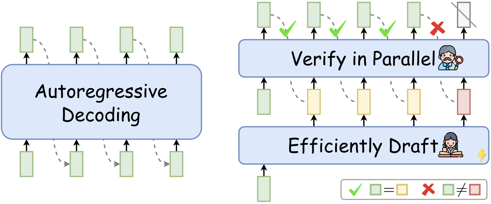
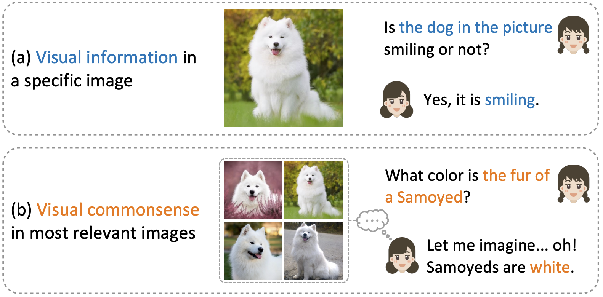
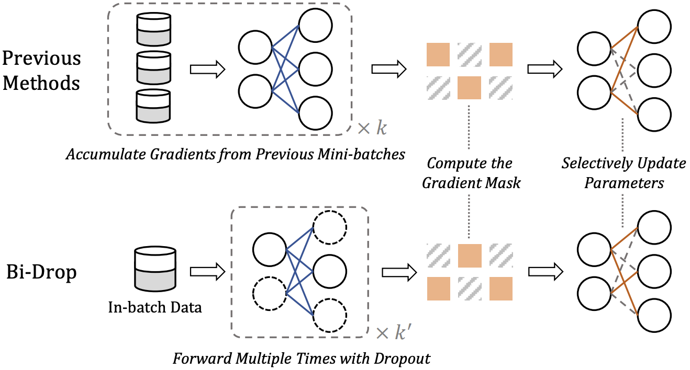
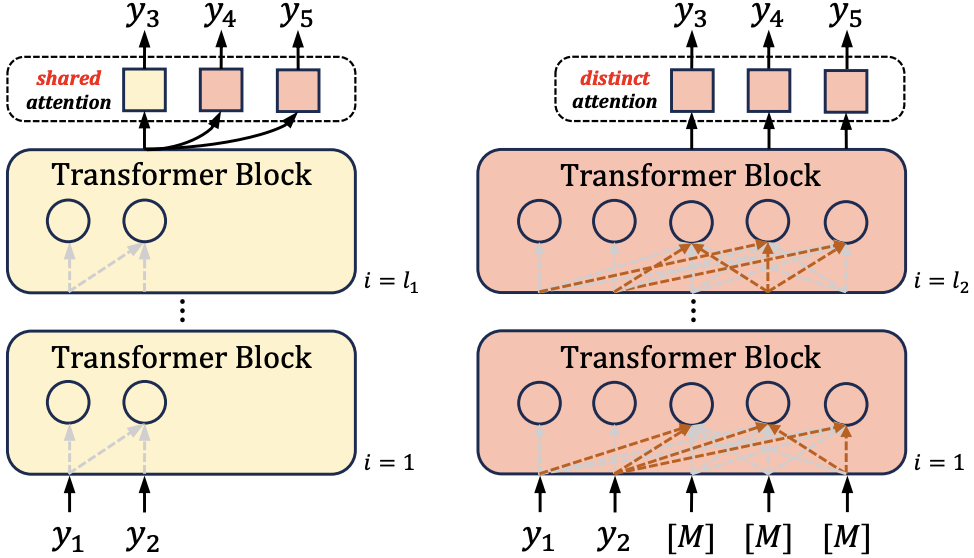
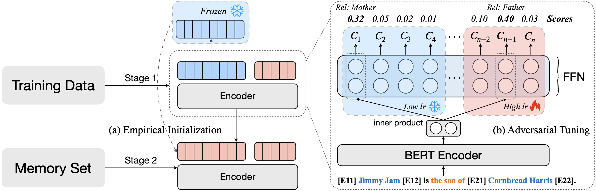
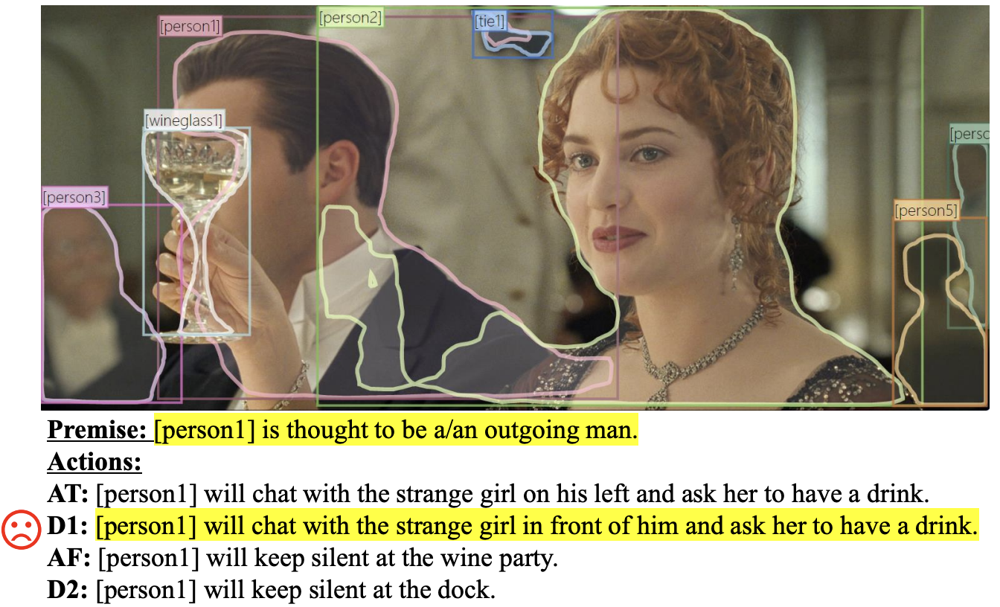

Research Interests
My research mainly focuses on natural language processing and machine learning, especially: 1) efficient and effective NLP, 2) tool learning, and 3) cross vision and language understanding.
I'm open to brainstorming🤔 and discussion. Please feel free to grab a cup of coffee and chat with me!
|
News
[2024.01] 🔥Released our new survey on Speculative Decoding, check it out!
[2024.01] Started my Ph.D. study at the Department of Computing, PolyU, advised by Prof. Wenjie Li.
[2023.10] Got three papers accepted by EMNLP 2023.
[2023.05] Got one short paper accepted by ACL 2023.
[2022.05] Got one paper accepted by ACL 2022.
[2021.10] Started my research internship at NLC Group @ Microsoft Research Asia, advised by Dr. Tao Ge.
|
Selected Publications
* denotes equal contribution. See the full list in my Google Scholar.
|
|

|
Unlocking Efficiency in Large Language Model Inference: A Comprehensive Survey of Speculative Decoding
Heming Xia, Zhe Yang, Qingxiu Dong, Peiyi Wang, Yongqi Li, Tao Ge, Tianyu Liu, Wenjie Li, Zhifang Sui
Arxiv, 2023
|
|

|
ImageNetVC: Zero- and Few-Shot Visual Commonsense Evaluation on 1000 ImageNet Categories
Heming Xia*, Qingxiu Dong*, Lei Li, Jingjing Xu, Tianyu Liu, Ziwei Qin, Zhifang Sui
Findings of EMNLP, 2023
|
|

|
Bi-Drop: Enhancing Fine-tuning Generalization via Synchronous sub-net Estimation and Optimization
Shoujie Tong*, Heming Xia*, Damai Dai, Runxin Xu, Tianyu Liu, Binghuai Lin, Yunbo Cao, Zhifang Sui
Findings of EMNLP, 2023
|
|

|
Speculative Decoding: Exploiting Speculative Execution for Accelerating Seq2seq Generation
Heming Xia*, Tao Ge*, Peiyi Wang, Si-Qing Chen, Furu Wei, Zhifang Sui
Findings of EMNLP, 2023
|
|

|
Enhancing Continual Relation Extraction via Classifier Decomposition
Heming Xia, Peiyi Wang, Tianyu Liu, Binghuai Lin, Yunbo Cao, Zhifang Sui
Findings of ACL, 2023
|
|

|
Premise-based Multimodal Reasoning: Conditional Inference on Joint Textual and Visual Clues
Qingxiu Dong, Ziwei Qin, Heming Xia, Tian Feng, Shoujie Tong, Haoran Meng, Lin Xu, Zhongyu Wei, Weidong Zhan, Baobao Chang, Sujian Li, Tianyu Liu, Zhifang Sui
ACL, 2022
|
Academic Services
Reviewer for: NeurIPS 2022, AACL 2022, AACL 2023
|
Honors and Awards
Model Student of Social Work, Peking University (2022)
Merit Student, Peking University (2021)
Scholarship of National Astronomical Observatory, Chinese Academy of Sciences (2019)
Merit Student, Henan Province, China (2016)
|
|
{kind=link}